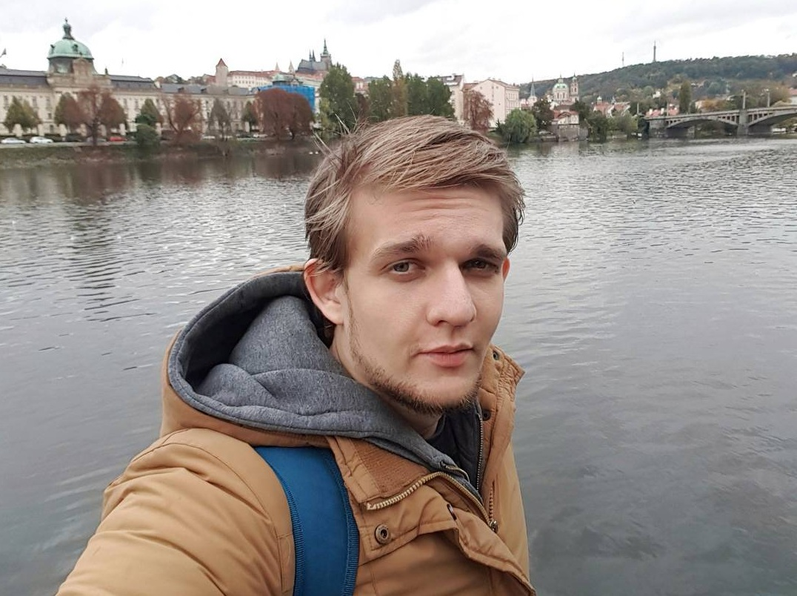

ПАШКЕВИЧ СТАНИСЛАВ ВЛАДИМИРОВИЧ
Дата рождения: 28.06.1991
Город: Кривой Рог
Учился в Криворожской среднеобразовательной школе № 130.
После окончания школы в 2008 году, поступил в ВУЗ.
Механико-машиностроительный факультет, Криворожского Национального Университета.
Закончил университет со степенью "Бакалавр", по специальности "Инженер горных машин и комплексов".
После окончания, работал в основном в сфере продаж. Последнее место работы, фирменный магазин техники "Samsung", город Киев. Опыта, курсов, тренингов в данной сфере не имею.
Личные качества :
- Целеустремленность
- Исполнительность
- Ответственность
Ожидания от данного курса :
- Получение знаний и умений, необходимых для освоения данной отрасли.
- Получение престижной, хорошо оплачиваемое профессии.
- Возможность постоянно учиться чему-то новому.
Спасибо за внимание :)
Пашкевич С. В.
2018